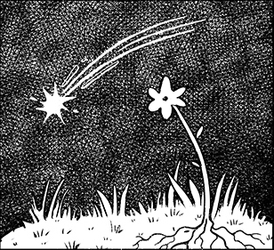
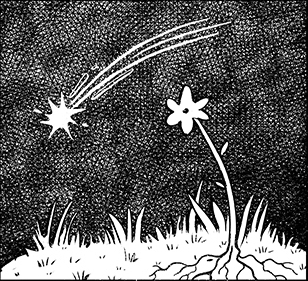

VOLVER A ARCHIVO

VOLVER A ARCHIVO

Cuando llega el invierno, la planta se mantiene en un estado durmiente, hasta que las condiciones ambientales son adecuadas para florecer. Este cómic corto fue realizado en paralelo al trabajo “Lo que aprendí de les fae” y cuenta la historia de un despertar. Una historia fugaz de autodescubrimiento, crecimiento y comunidad indudablemente queer inspirada por vivencias personales.

Ermes Olea
Madrid, España | sandrune.art
Porfolio 2025/2026